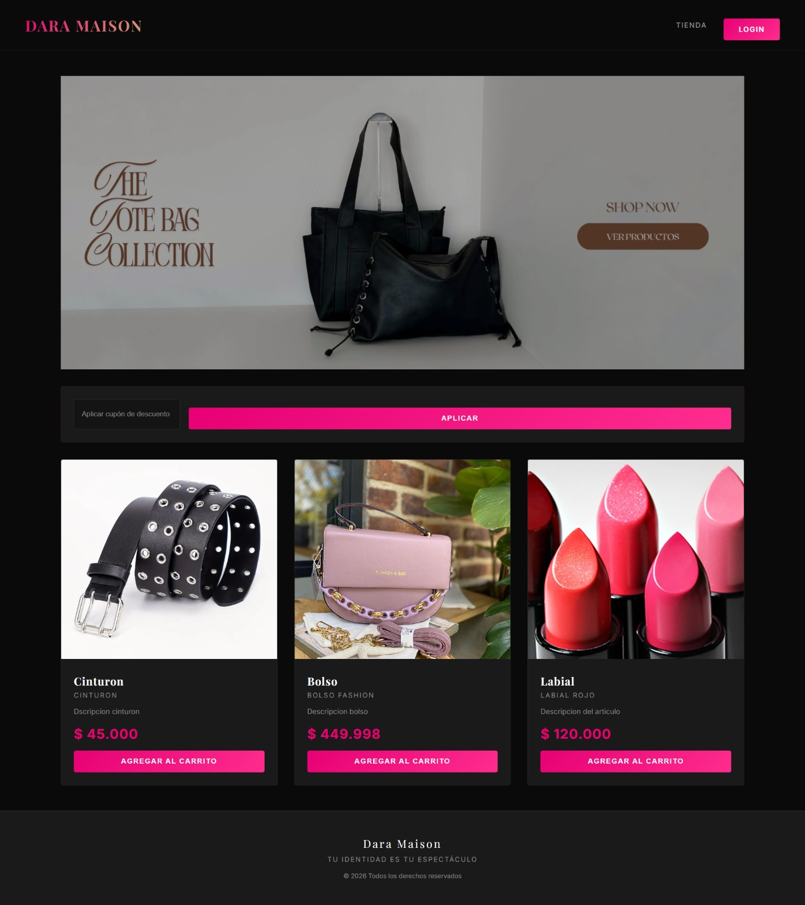
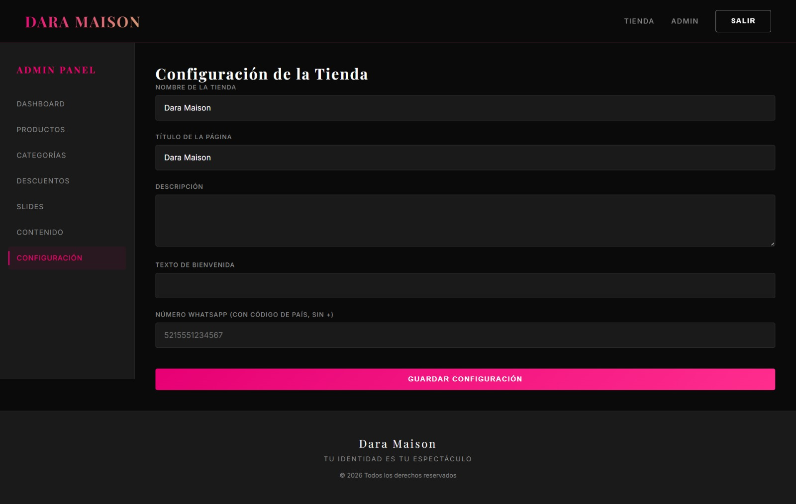
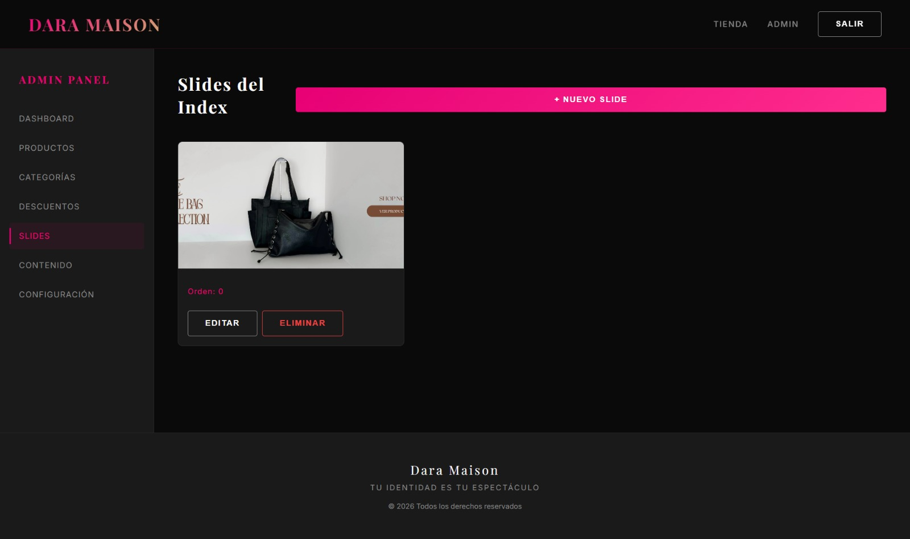
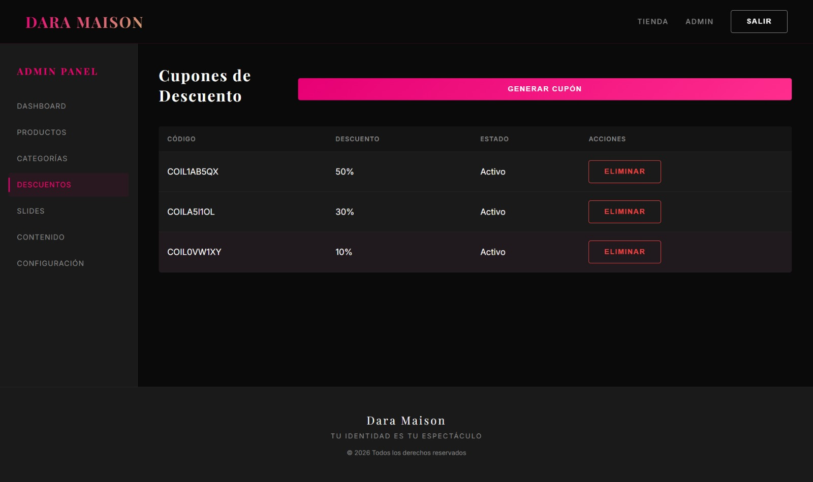
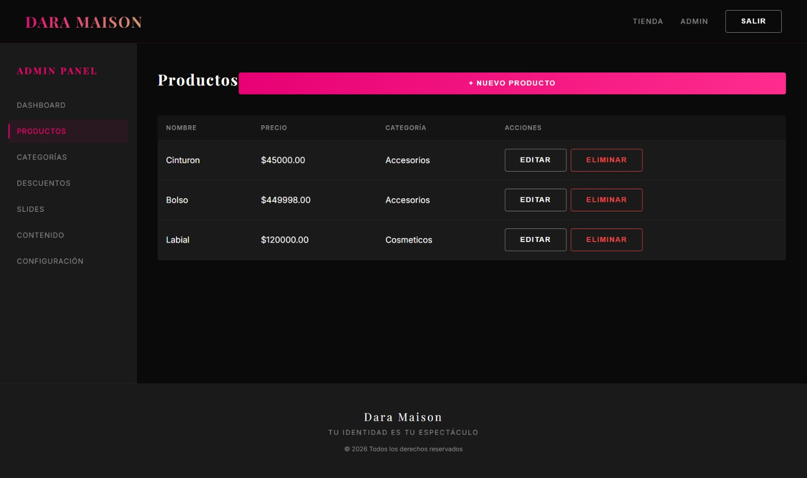

Grupo Arik
El proyecto consistió en el diseño y desarrollo de una landing page integrada con iCommerce, enfocada en mejorar la presencia digital del emprendimiento y optimizar la experiencia del usuario. La plataforma fue desarrollada con una interfaz moderna, intuitiva y atractiva.
Se diseñó y desarrolló una landing page completamente integrada con iCommerce, estructurada estratégicamente para captar la atención de los usuarios y generar conversiones.
Para garantizar rendimiento y escalabilidad, se implementaron tecnologías modernas como:
También se aplicaron buenas prácticas de SEO y seguridad, incluyendo optimización de carga, diseño responsive y protección mediante tokens JWT.
A continuación se presentan algunas capturas de la interfaz desarrollada para la plataforma eCommerce, incluyendo la tienda principal y el panel administrativo.





Como resultado, se obtuvo una plataforma moderna, segura y optimizada, capaz de brindar una experiencia fluida y eficiente para los usuarios.
La implementación de tecnologías modernas y estrategias SEO permite mejorar la visibilidad digital y aumentar el alcance del emprendimiento.
Puedes acceder a la plataforma completa y ver todas las funcionalidades de eCommerce en acción.